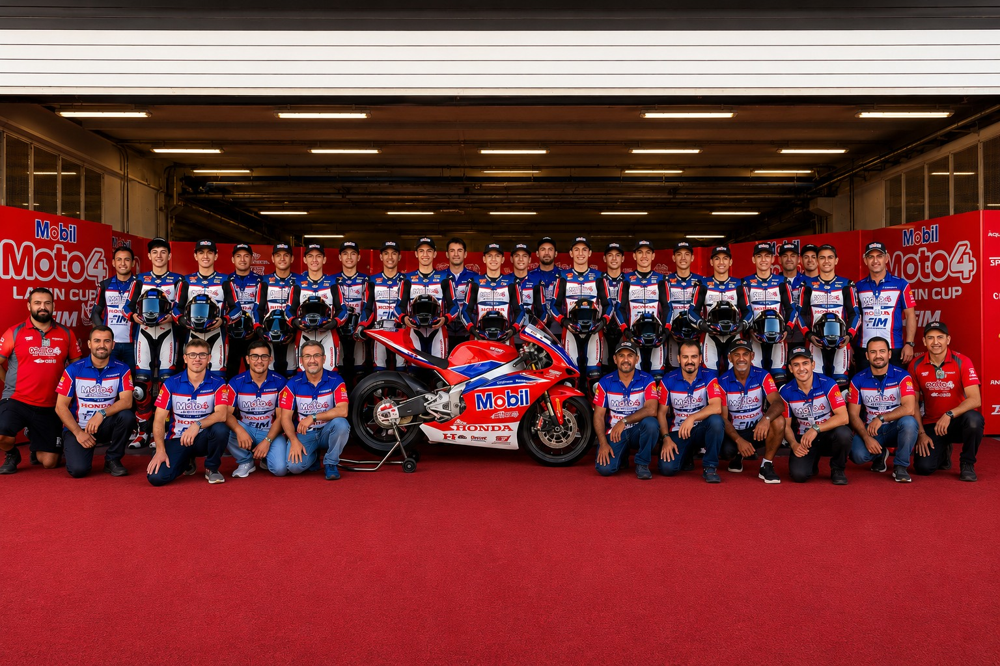
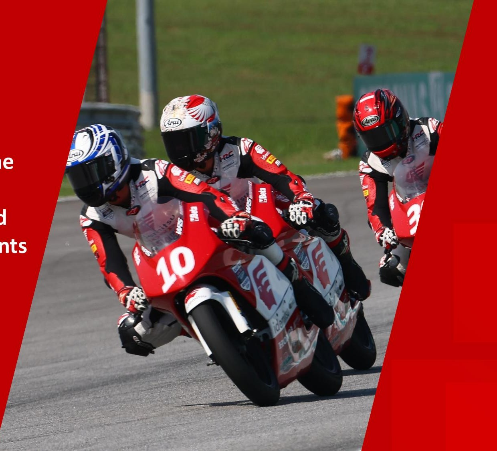
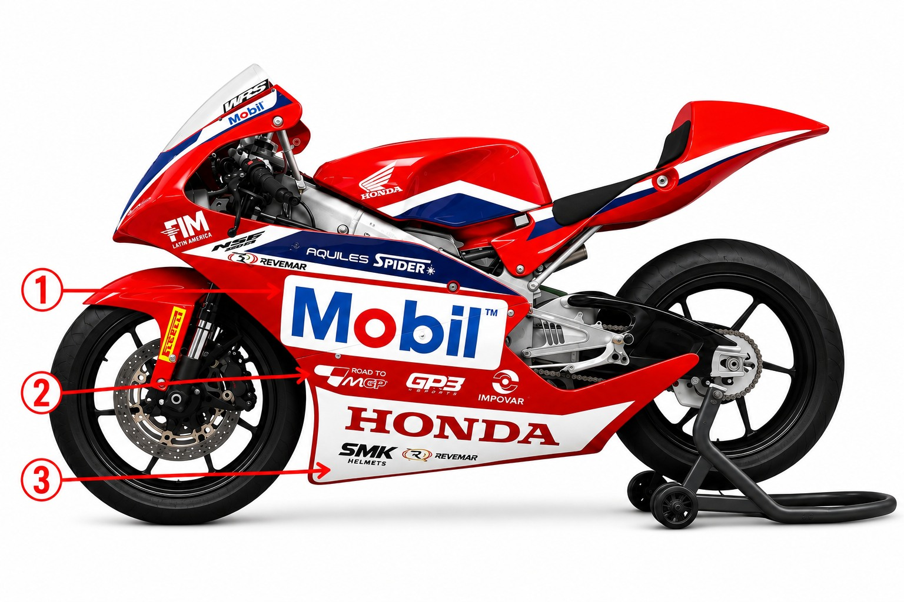
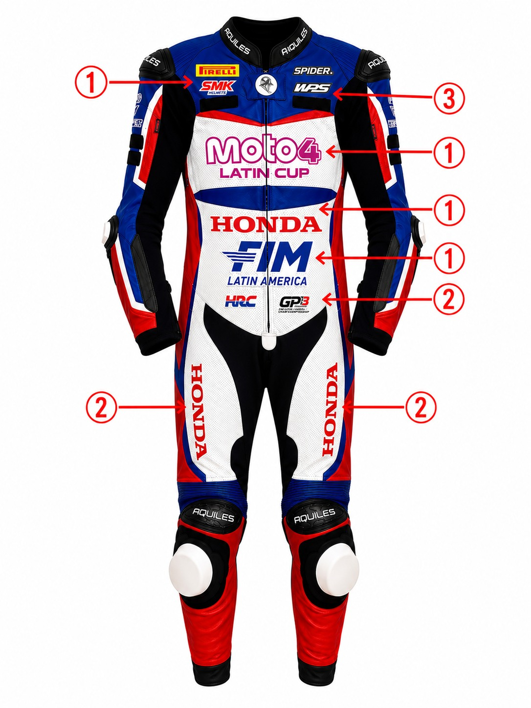
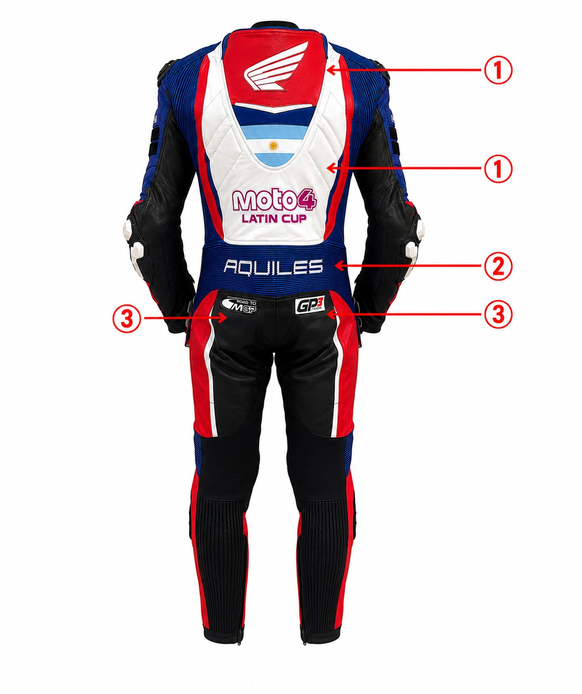
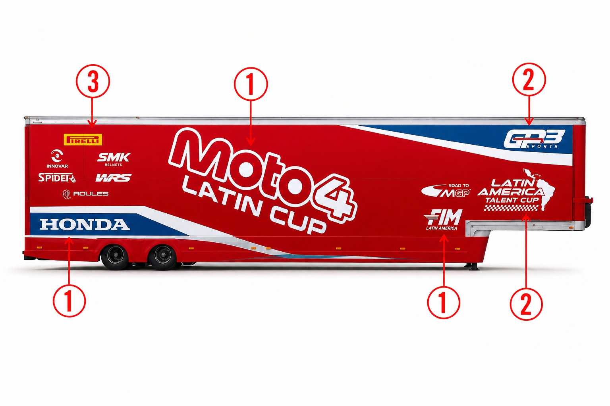

Propuesta comercial
Material reservado para marcas y aliados.
Ingresa el código de acceso.
Código incorrecto
Material reservado para marcas y aliados.
Ingresa el código de acceso.



Programa para descubrir y desarrollar pilotos latinoamericanos, creando el camino a MotoGP™ a través de un campeonato regional y competencias internacionales.
Campeonato oficial FIM Latin America de la categoría Moto4, dentro del programa Road to MotoGP™ de MotoGP Sports Entertainment Group (MotoGP Group), organizado y financiado por GP3 Sports junto a sus aliados.
20 federaciones FIM-LA · Categoría OPEN

Creada en 2014 para jóvenes pilotos asiáticos (14–17 años), la ATC es una de las principales puertas de entrada a MotoGP™ y ya produjo talentos como Ai Ogura y Somkiat Chantra.
Su title sponsor es Idemitsu, la petrolera japonesa — el espejo asiático de lo que Mobil es hoy en Latinoamérica.
Moto4 Latin Cup adopta el mismo modelo de desarrollo implementado por Asia Talent Cup, adaptándolo a la realidad de Latinoamérica para formar la próxima generación de pilotos del continente.



 Parque cerrado · San Nicolás
Parque cerrado · San Nicolás En pista · Moto4 Latin Cup 2026
En pista · Moto4 Latin Cup 2026 La largada
La largada Podio · 2026
Podio · 2026 Los ganadores
Los ganadores El equipo · powered by Mobil
El equipo · powered by Mobil


Frente
Espalda
